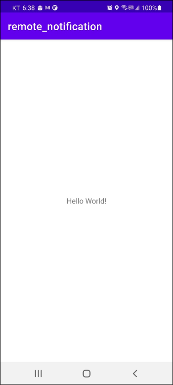
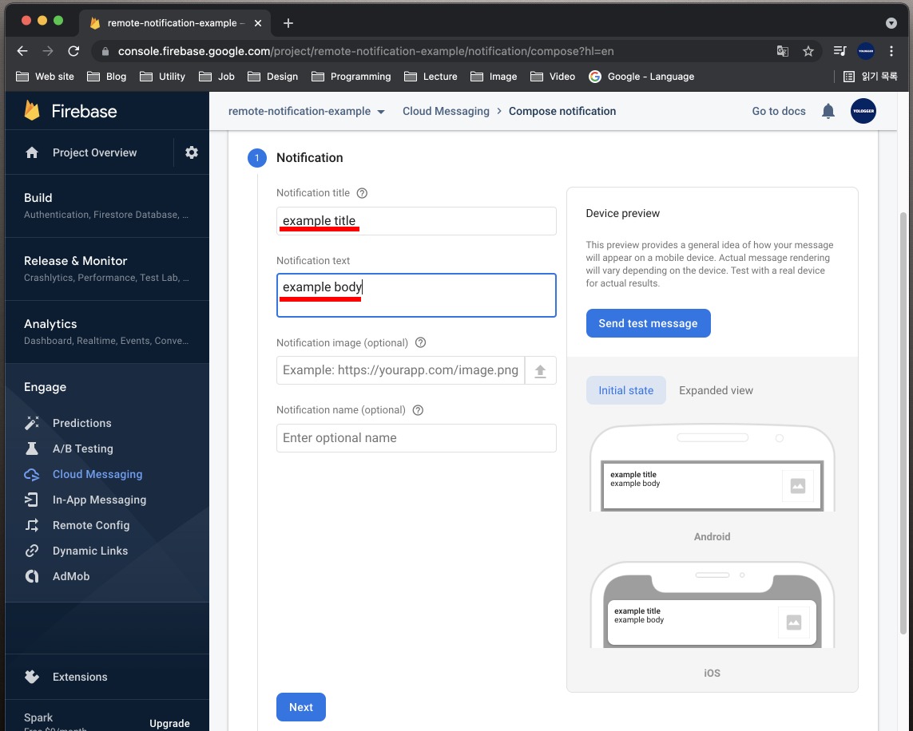
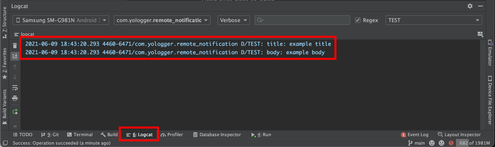

포그라운드 상태에서 알람 받기
현재 포그라운드로 실행되고 있는 앱은 Firebase 알림을 받지 못합니다.
포그라운드 상태에서 알림을 받으려면 FirebaseMessagingService클래스를 구현하고 onMessageReceived()메서드를 오버라이딩 해야합니다.
MyFBMessageService라는 클래스를 다음과 같이 구현합니다.
1
2
3
4
5
6
7
| class MyFBMessageService : FirebaseMessagingService() {
override fun onMessageReceived(remoteMessage: RemoteMessage) {
super.onMessageReceived(remoteMessage)
}
}
|
onMessageReceived()메소드가 호출될 때는 RemoteMessage객체를 인자로 받습니다. 이 객체에는 알림의 제목과 내용같은 정보가 담겨있습니다.
제목과 내용을 로그에 출력해보겠습니다.
1
2
3
4
5
6
7
8
9
10
11
12
13
14
15
| class MyFBMessageService : FirebaseMessagingService() {
override fun onMessageReceived(remoteMessage: RemoteMessage) {
super.onMessageReceived(remoteMessage)
val title = remoteMessage.notification?.title
val body = remoteMessage.notification?.body
Log.d("TEST", "title: ${title}")
Log.d("TEST", "body: ${body}")
}
}
|
마지막으로 AndroidManifest.xml에 Firebase 메시징과 관련된 액션을 수신할 수 있도록 인텐트 필터를 추가합니다.
AndroidManefest.xml1
2
3
4
5
6
7
8
9
10
11
12
13
14
15
16
17
18
19
20
21
22
23
| <?xml version="1.0" encoding="utf-8"?>
<manifest xmlns:android="http://schemas.android.com/apk/res/android"
package="com.yologger.remote_notification">
<application android:allowBackup="true"
android:icon="@mipmap/ic_launcher"
android:label="@string/app_name"
android:roundIcon="@mipmap/ic_launcher_round"
android:supportsRtl="true"
android:theme="@style/Theme.Remote_notification">
<service android:name=".MyFBMessageService"
android:enabled="true"
android:exported="true">
<intent-filter>
<action android:name="com.google.firebase.MESSAGING_EVENT"/>
</intent-filter>
</service>
</application>
</manifest>
|
이제 앱을 실행시킵니다. 홈 버튼을 누르지 않고 앱을 포그라운드 상태로 유지합니다.

Firebase 콘솔에서 알림을 보냅시다.

그러면 로그에 다음과 같은 내용이 출력됩니다.
